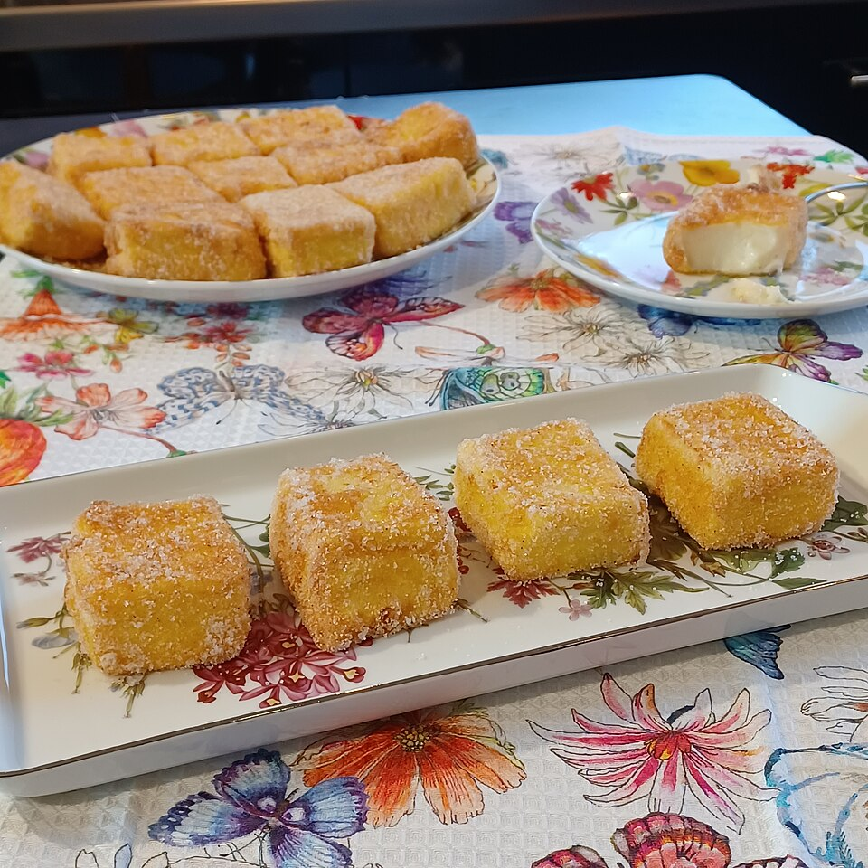

Originating in Spain, this delectable treat is literally fried milk!!! Soft pudding like interior with a slight crunch on the outside, you will love this sweet treat! Prep time and chilling the milk may take a while, so patience is both key and a virtue to making this dish.
Return to Recipes Index